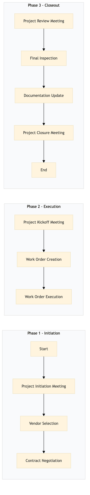

| Role | Steps |
|---|---|
| Facilities Manager | 1.1 1.3 2.1 3.1 3.3 3.4 |
| Procurement Manager | 1.2 |
| Legal Counsel | 1.3 |
| Facilities Engineer | 2.2 3.2 |
| Maintenance Team | 2.3 |
| Step | Name | Role | System | Input | Output | KPI | Dec? | Exc? | Pain Point / Risk |
|---|---|---|---|---|---|---|---|---|---|
| 1.1 | Project Initiation Meeting | Facilities Manager | Oracle OPERA Cloud | Project proposal and budget | Project plan and timeline | Completion within 2 hours | Y | N | Coordination with multiple departments for project initiation. |
| 1.2 | Vendor Selection | Procurement Manager | Birchstreet Procurement | Project requirements and budget | Selected vendor proposal | Less than 5 days | Y | N | Balancing cost, quality, and timeline for vendors. |
| 1.3 | Contract Negotiation | Legal Counsel | Oracle OPERA Cloud | Vendor proposal | Signed contract | Less than 7 days | Y | N | Ensuring all legal and compliance requirements are met. |
| 2.1 | Project Kickoff Meeting | Facilities Manager | Oracle OPERA Cloud | Signed contract | Kickoff meeting minutes and project schedule | Completion within 1 hour | Y | N | Ensuring all stakeholders are aligned on project scope and timeline. |
| 2.2 | Work Order Creation | Facilities Engineer | Oracle OPERA Cloud | Project schedule | Work orders in Oracle OPERA Cloud | Less than 3 days | Y | N | Accurate and timely creation of work orders to avoid delays. |
| 2.3 | Work Order Execution | Maintenance Team | Oracle OPERA Cloud | Work orders in Oracle OPERA Cloud | Completed work order status updates | Less than 5 days per work order | Y | N | Ensuring timely execution of work orders without affecting guest services. |
| 3.1 | Project Review Meeting | Facilities Manager | Oracle OPERA Cloud | Completed work order status updates | Project review meeting minutes and final report | Completion within 2 hours | Y | N | Identifying any issues or deviations from the project plan. |
| 3.2 | Final Inspection | Facilities Engineer | Oracle OPERA Cloud | Project review meeting minutes | Inspection report and final sign-off | Less than 1 day | Y | N | Ensuring all work meets Marriott's quality standards. |
| 3.3 | Documentation Update | Facilities Manager | Oracle OPERA Cloud | Inspection report and final sign-off | Updated project documentation in Oracle OPERA Cloud | Less than 2 days | Y | N | Maintaining accurate and up-to-date records for future reference. |
| 3.4 | Project Closure Meeting | Facilities Manager | Oracle OPERA Cloud | Updated project documentation | Project closure meeting minutes and final feedback | Completion within 1 hour | Y | N | Gathering feedback from all stakeholders for continuous improvement. |
The process document outlines the management of capital works and renovation projects at a full-service Marriott hotel. It ensures that all necessary steps are followed to complete projects efficiently while maintaining high standards of guest satisfaction.